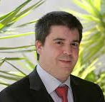
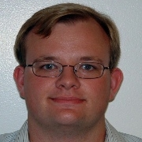

About deltaBEM
The package deltaBEM is a collection of open source MATLAB files requiring no compilation. A front end is not provided. The user is expected to peruse the documented examples provided and modify them to write scripts that meet their needs. Potential users are welcome to download and use the code freely. We just request that any results obtained with the aid of deltaBEM acknowledge its use and cite the relevant papers. At present we only offer the functions needed for steady state and time-harmonic problems. However, the time-harmonic case has been programmed in a way that makes it easy to connect with Convolution Quadrature (CQ) routines for time domain simulations. Low order CQ routines will be added shortly to this site.
About Us
The deltaBEM suite has developed over the years thanks to the joint efforts of a number of people -ranging from faculty to undergraduate students- that have contributed with theoretical developments, computational implementation and lots of field/crash-testing. Here are the main contributors.

Francisco-Javier
Sayas University of Delaware Coordinator
Victor
Domínguez
Universidad Pública de Navarra (Spain)
Tianyu
Qiu
Graduate Student,
University of Delaware

Tonatiuh
Sánchez-Vizuet
Graduate Student,
University of Delaware
Matthew
Hassell
Graduate Student,
University of Delaware
Former team members
Sijiang
Lu
PhD U.D. in 2013(Contributed 2011-2013)
Early ideas leading to the current configuration of deltaBEM
appear in papers in collaboration with
María-Luisa Rapún. Further development was done during
summer research internships with freshmen graduate students
Michael DePersio (2012, University of Delaware) and Douglas
Freeman (2013, University of Delaware). Andrea Carosso, then
a senior udergraduate student at the University of Delaware
(currently a graduate student at UC-Boulder), participated
during a summer program and an independent study course
throughout the 2013 academic year.